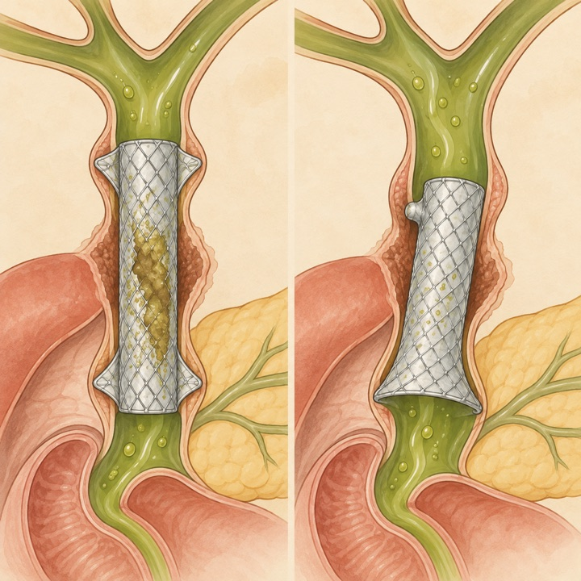
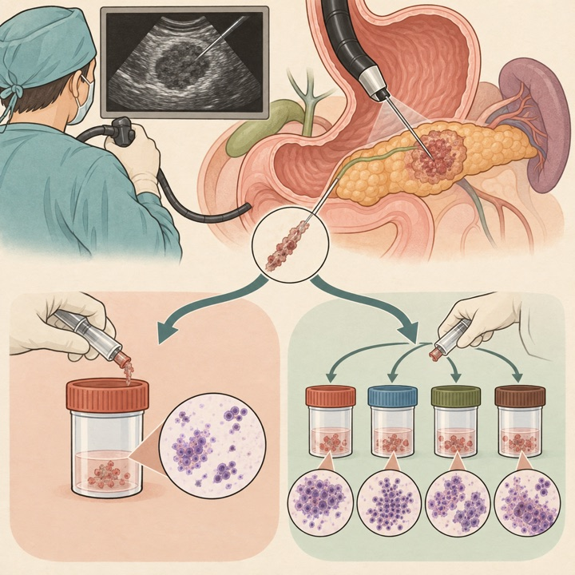
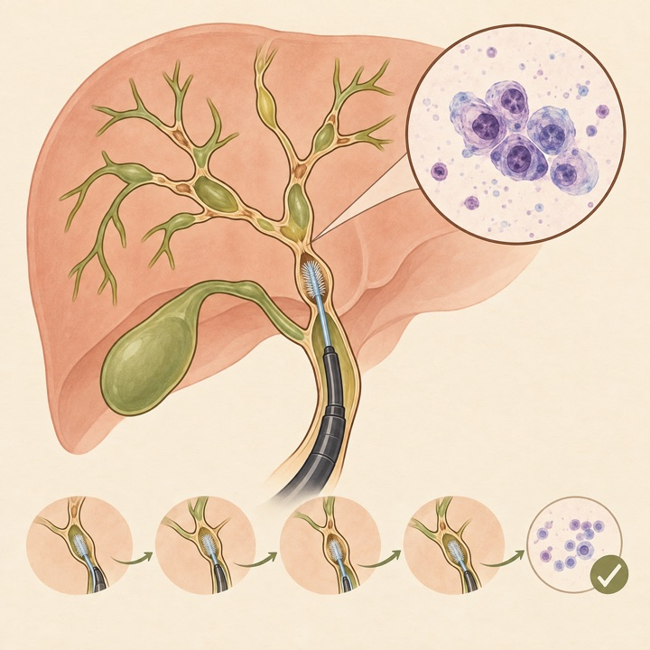
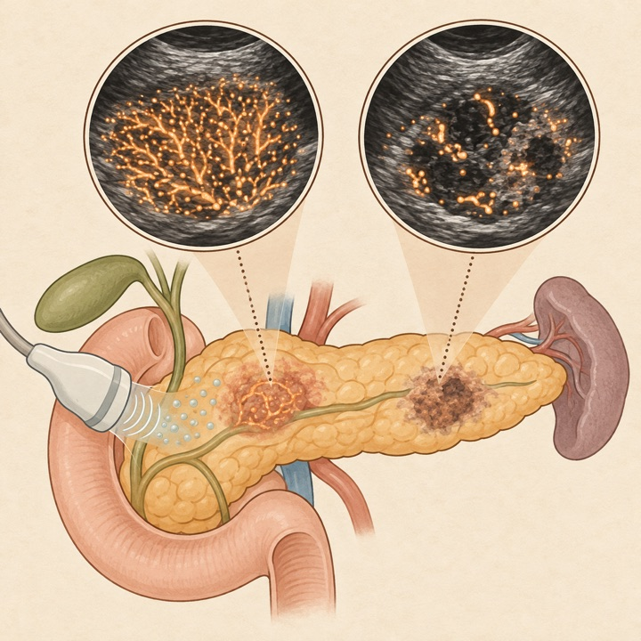
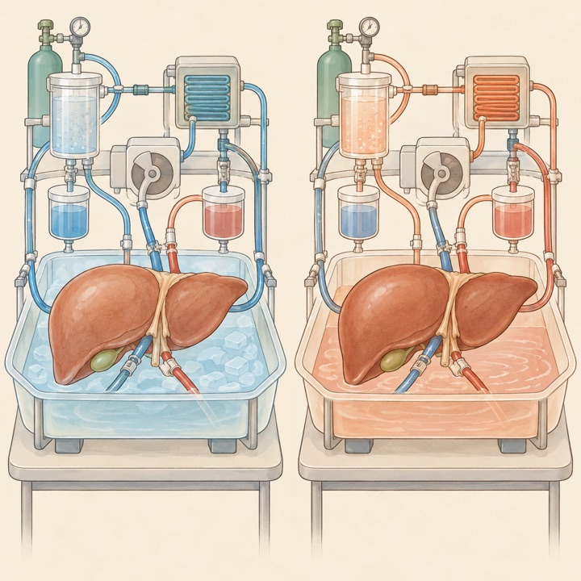
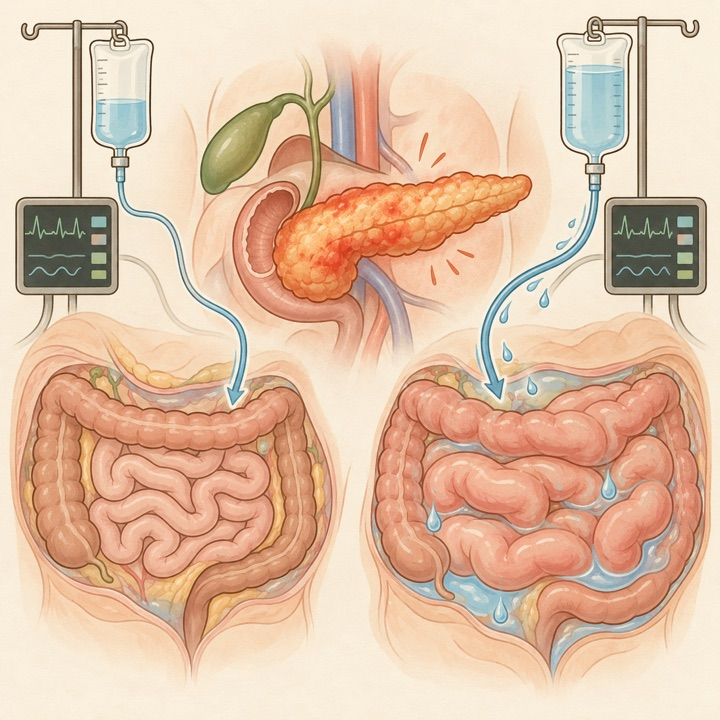
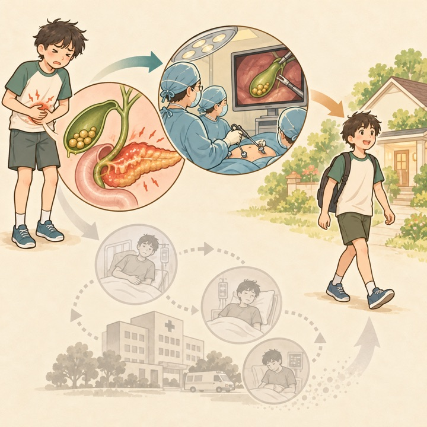
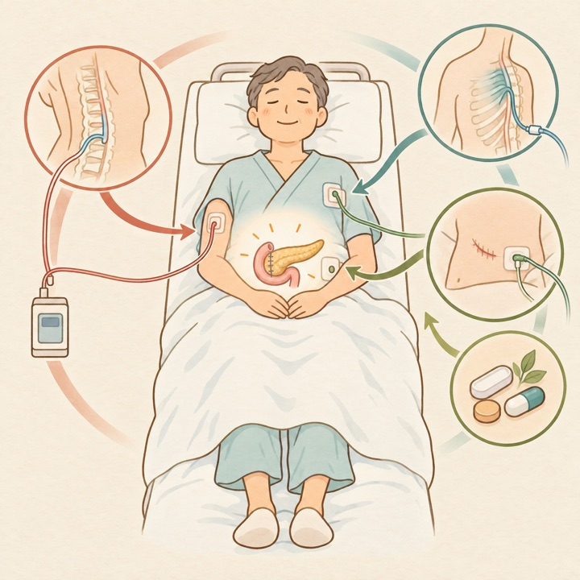
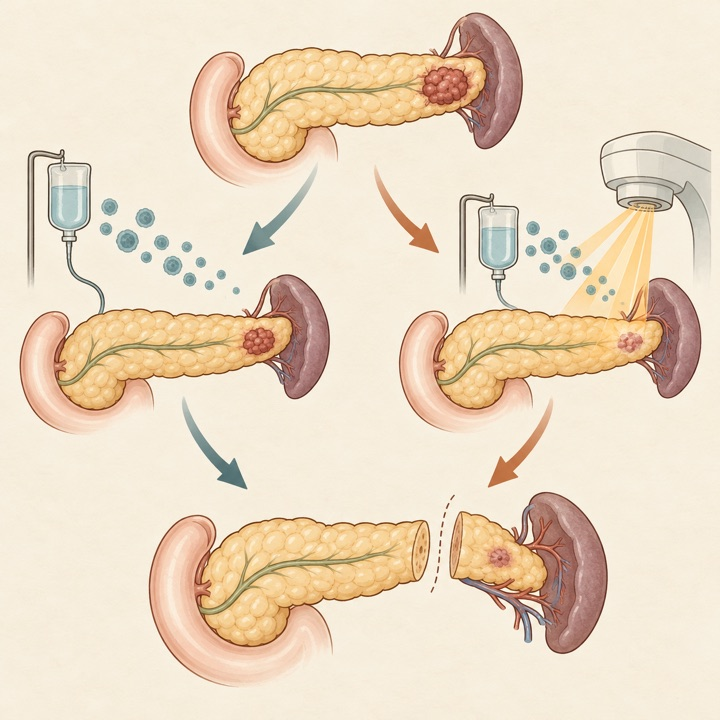

DCD肝移植：D-HOPEとNMPを無作為比較
Liver Transplantation / Q1Randomized trial
NRP後の50グラフトで1年重篤有害事象は16%対20%。小規模で優越性は示さず、個別選択を支持します。
Tokai University Pancreatobiliary Group
This Week's Pancreatobiliary Research Highlights
臨床的重要性、研究デザイン、診療への応用可能性を基準に4報を選定しました。IFとJCR quartileは2025年値（2026年公表、判明した最良カテゴリ）を使用し、確実に判定できない場合はQ4としています。
NRP後の50グラフトで1年重篤有害事象は16%対20%。小規模で優越性は示さず、個別選択を支持します。
反復異形成所見は摘出肝の異形成と強く関連。ERC scoreと血清IgG4がリスク層別化に寄与しました。
bump＋flare型はfin型よりmigrationが多い一方、閉塞は少なく、設計別の長短が明確になりました。
60日再入院は胆嚢摘出4.4%対無介入24.8%。観察研究ながら大きな絶対差でした。
日本語: anchoring fin型143例と、anchoring bump＋大きなdistal flare型85例を比較しました。傾向スコアマッチ後、bump＋flare型はmigrationが多く（aOR 5.25、adjusted HR 6.26）、閉塞は少ない傾向でした（aOR 0.27）が、time-to-event解析では閉塞差は有意でありませんでした。設計選択には移動抵抗性と開存性のtrade-offがあり、後ろ向き比較のため施設・適応選択の残余交絡が残ります。
English: The bump-and-flare FCSEMS had substantially more migration but fewer occlusions than the finned design, highlighting a clinically relevant design trade-off rather than a universally superior stent.

日本語: 画像で腫瘤を認める248例を、EUS-FNA検体の分散保存と非分散保存へ無作為化しました。診断精度は96.34%対88.31%（P=0.0262）で分散群が高く、特に嚢胞充実性病変で差を認めました。対象は膵病変に限定されず、病理処理・穿刺回数・最終診断法の詳細が実装可能性を左右するため、施設の病理ワークフローでの再現確認が必要です。
English: Distributing aspirated material across specimen containers improved overall EUS-FNA diagnostic accuracy in this randomized study, but generalizability depends on lesion mix and local cytopathology workflow.

日本語: ERCを受けたPSC 984例・4,017 brush cytologyを解析し、10%で少なくとも一度biliary dysplasiaを検出しました。陰性的中率0.99、全体精度0.91で、異形成反復所見は摘出肝の異形成と強く関連しました。ERC score≥7（AUC 0.87）と時間加重血清IgG4（AUC 0.76）の組合せはAUC 0.88でした。侵襲的ERCを全例へ反復する根拠ではなく、個別化監視にどう組み込むかを前向きに検証すべき結果です。
English: Repeated brush cytology in PSC had a very high negative predictive value and repeated dysplasia correlated with explant pathology; ERC severity and longitudinal IgG4 may help individualize surveillance.

日本語: focal AIP 15例とPDAC 15例にCEUSとultrasound localization microscopy（ULM）を行いました。AIPはPDACより血管密度が高く均一で、Δ fractal numberとnormalized fractal numberはいずれもAUC 0.985、最良のCEUS単独所見はAUC 0.800でした。症例数が極めて少なく選択された集団で、offline再構築を要する探索研究です。臨床バイオマーカー化には多施設外部検証が不可欠です。
English: ULM depicted denser, more homogeneous microvasculature in focal AIP than PDAC and achieved excellent apparent discrimination, but the 30-patient exploratory cohort risks substantial optimism.

日本語: normothermic regional perfusion後のDCD 50グラフトをD-HOPEとNMPへ1:1無作為化しました。1年重篤有害事象は16%対20%（P=0.31）、グラフト・患者生存はD-HOPE 88%対NMP 100%（P=0.07）で、primary non-functionと血管合併症はありませんでした。評価目的の灌流ではなく、小規模・イベント少数のため、同等性や個別合併症差を確定できません。
English: After NRP, D-HOPE and NMP produced similar one-year serious-adverse-event rates in 50 randomized DCD grafts. The trial was too small to establish equivalence or superiority.

日本語: protocol時期により制限的輸液82例と従来輸液68例を比較しました。輸液量は68.5対89.7 mL/kg/day、fluid overloadは8.5%対23.5%（P=0.014）で、制限群では48時間の腸上皮障害マーカー、腹腔内圧、炎症性サイトカインも低値でした。一方、主要臓器合併症と30日死亡に差はなく、無作為化でない時期比較のため臨床転帰の優越性は証明していません。
English: Restrictive resuscitation was associated with less fluid overload and lower intestinal-injury and inflammatory markers, but not better major clinical outcomes in this nonrandomized cohort.

日本語: 2016〜2020年の米国全国再入院データで小児胆石性膵炎13,517例を解析しました。60日再入院は同一入院中胆嚢摘出で4.4%、無介入で24.8%（aHR 0.16）でした。胆嚢摘出なしでもERCPは24.8%から14.85%へ低下し、両者施行群は3.7%でした。大規模ですが、請求データの適応交絡、重症度・施設方針、再入院捕捉の限界があります。
English: Index-admission cholecystectomy was associated with a five- to six-fold lower 60-day readmission rate in pediatric gallstone pancreatitis, supporting early definitive management while awaiting prospective confirmation.

日本語: 膵頭十二指腸切除、遠位・全膵切除後鎮痛の18 RCT・1,468例を統合しました。硬膜外鎮痛と傍脊椎block・持続創部浸潤は術後1〜2日で疼痛が同程度、3日目は低侵襲法が低値でした。COX阻害薬も2日目安静時痛を軽減しましたが、各メタ解析は小さく、GRADEはvery low〜lowでした。単一手法の優越性は確定せず、ERAS内での多面的鎮痛が妥当です。
English: Less invasive blocks and wound infiltration provided pain control comparable to epidural analgesia early after pancreatic surgery, but evidence certainty was low and no single best strategy emerged.

日本語: 術前治療後に遠位膵切除・脾摘を受けたPDAC 284例をnCRT 142例とnCT 142例で比較しました。nCRTはdownstaging 47.2%対25.4%、進行7.7%対19.0%、OS 35対27か月（adjusted HR 0.74）と良好でした。2005〜2019年の後ろ向きNCDB解析で、放射線選択、時代変化、切除に到達した症例のみを含むimmortal-time/selection biasがあり、前向き試験が必要です。
English: Neoadjuvant chemoradiation was associated with more downstaging, less progression, and longer survival than chemotherapy alone before distal resection, but causal inference is limited by retrospective selection.

2026年10月26日〜11月1日にClinicalTrials.govへ初回公開または更新された研究を公式APIで確認し、胆膵疾患・胆膵内視鏡・肝移植に直接関連するものを選択しました。一般固形癌、糖尿病、アルコール性肝炎、無関係なEUS/IgG4略語のみの記録は除外しました。JRCTは検索していません。
| 新規｜周術期PDAC | NCT07900789 HRS-4642併用周術期治療 2026-10-28公開 / 第III相 / 825例 / Not yet recruiting。 |
|---|---|
| 新規｜AIP鑑別 | NCT07900776 EUS-AIによるAIP対PDAC鑑別 2026-10-28公開 / 多施設ambispective / 690例 / Not yet recruiting。 |
| 新規｜PSC | NCT07898839 / FEAST and HOPE redox介入pilot 2026-10-27公開 / 第II相 / 15例 / Not yet recruiting。 |
| 新規｜肝移植 | NCT07899853 in-situ対ex-situ肝保存 2026-10-28公開 / 752例 / Recruiting。 |
| 新規｜BTC外科 | NCT07893392 リンパ節転移BTCの原発切除＋選択的郭清＋放射線 2026-10-26公開 / 第II相 / 73例 / Recruiting。 |
| 新規｜高齢者BTC | NCT07897565 gemcitabine＋toripalimab＋減量lenvatinib 2026-10-27公開 / 第II相 / 39例 / Not yet recruiting。 |
| 新規｜MTAP欠失PDAC | NCT07897734 vopimetostat＋ERAS-0015 2026-10-27公開 / 第I/II相 / 188例 / Not yet recruiting。 |
| 新規｜切除不能膵癌 | NCT07898683 動注Yttrium-90 radioembolization 2026-10-27公開 / 第I相 / 12例 / Recruiting。 |
| 新規｜MTAP欠失PDAC | NCT07905131 周術期navlimetostat＋mFOLFIRINOX 2026-10-29公開 / 第Ib/II相 / 18例 / Not yet recruiting。 |
| 新規｜切除可能PDAC | NCT07898813 daraxonrasib 2026-10-27公開 / 第I相 / 30例 / Not yet recruiting。 |
| 新規｜遺残胆管結石 | NCT07906782 ERCP陰性後の胆道鏡検出研究 2026-10-30公開 / 31例 / Completed。 |
| 新規｜先天性胆道拡張 | NCT07903077 臨床像と長期転帰 2026-10-29公開 / 4,341例 / Completed。 |
| 更新｜BRCA/PALB2 PDAC | NCT04858334 / APOLLO 根治治療後olaparib対placebo 2026-10-26更新 / 第II相 / 152例 / Recruiting。 |
| 更新｜KRAS G12D PDAC | NCT07232875 HRS-4642＋GnP対placebo＋GnP 2026-10-26更新 / 第III相 / 588例 / Recruiting。 |
| 更新｜KRAS G12D PDAC | NCT07522073 INCB161734＋化学療法 2026-10-30更新 / 第III相 / 588例 / Recruiting。 |
| 更新｜転移性PDAC | NCT07562152 atebimetinib＋GnP一次治療 2026-10-30更新 / 第III相 / 510例 / Recruiting。 |
| 更新｜HER2陽性BTC | NCT06282575 zanidatamab＋標準治療 2026-10-28更新 / 第III相 / 286例 / Recruiting。 |
| 更新｜iCCA | NCT07691515 動注治療＋tislelizumab＋lenvatinib対GemCis 2026-10-26更新 / 第III相 / 140例 / Not yet recruiting。 |
| 更新｜慢性膵炎 | NCT07697352 微生物由来対ブタ由来膵酵素補充 2026-10-26更新 / 第III相 / 134例 / Recruiting。 |
| 更新｜肝移植灌流 | NCT07692490 NMP後再冷却回避 2026-10-28更新 / 170例 / Recruiting。 |
| 更新｜PSC | NCT04685200 multidisciplinary integrative natural-history study 2026-10-29更新 / 143例 / Recruiting。 |
| 更新｜肝移植感染 | NCT05594901 CRE保菌者のrisk stratification 2026-10-26更新 / 240例 / Completed。 |
| 更新｜進行PDAC | NCT06015659 ZN-c3＋gemcitabine 2026-10-27更新 / 第II相 / 12例 / Terminated。 |
| 更新｜悪性胃出口閉塞 | NCT06567691 EUS胃腸吻合対外科的胃空腸吻合 2026-10-27更新 / Withdrawn。 |
PubMedの2026年10月26日〜11月1日EDAT/新着索引に加え、Nature Reviews Gastroenterology & Hepatology、The Lancet Gastroenterology & Hepatology、Gastroenterology、Gut、Clinical Gastroenterology and Hepatology、Annals of Surgery、Journal of Hepato-Biliary-Pancreatic Sciences、Gastrointestinal Endoscopy、Endoscopy、Surgical Endoscopy、Endoscopy International Open、VideoGIE、Clinical Endoscopy、Digestive Endoscopy、DEN Open、iGIEの公式最新掲載・アーカイブページと、選定論文の出版社ページまたはDOI/PubMedを確認しました。アクセス制限のあるページは公式DOIとPubMed索引を突合しています。IFは2025 Journal Impact Factorを優先し、quartileを確実に確認できない誌は依頼方針に従いQ4と表示しています。速報・ahead of printの情報は更新されることがあります。
2026年10月19日〜10月25日版
2026年10月12日〜10月18日版
2026年10月5日〜10月11日版
2026年9月28日〜10月4日版
2026年9月21日〜9月27日版
2026年9月14日〜9月20日版
2026年9月9日〜9月15日版
2026年8月31日〜9月6日版
2026年8月24日〜8月30日版
2026年8月17日〜8月23日版
2026年8月10日〜8月16日版
2026年8月3日〜8月9日版
2026年7月27日〜8月2日版
2026年7月20日〜7月26日版
2026年7月13日〜7月19日版
2026年7月6日〜7月12日版
医療従事者向け情報： 本ページは医師・医学生・研究者向けの文献整理であり、患者向け広告、診療ガイドライン、個別の診断・治療助言ではありません。掲載内容は公開時点の情報に基づき、原著論文・最新ガイドライン・各施設の方針をご確認ください。